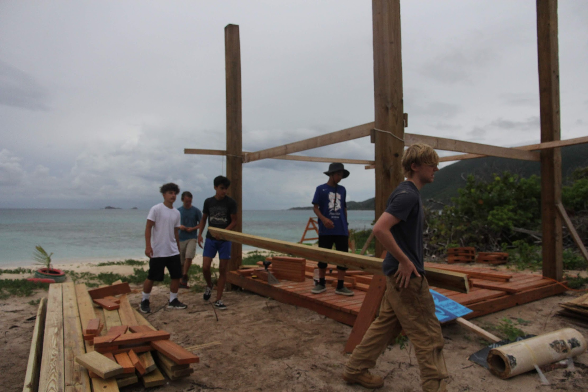
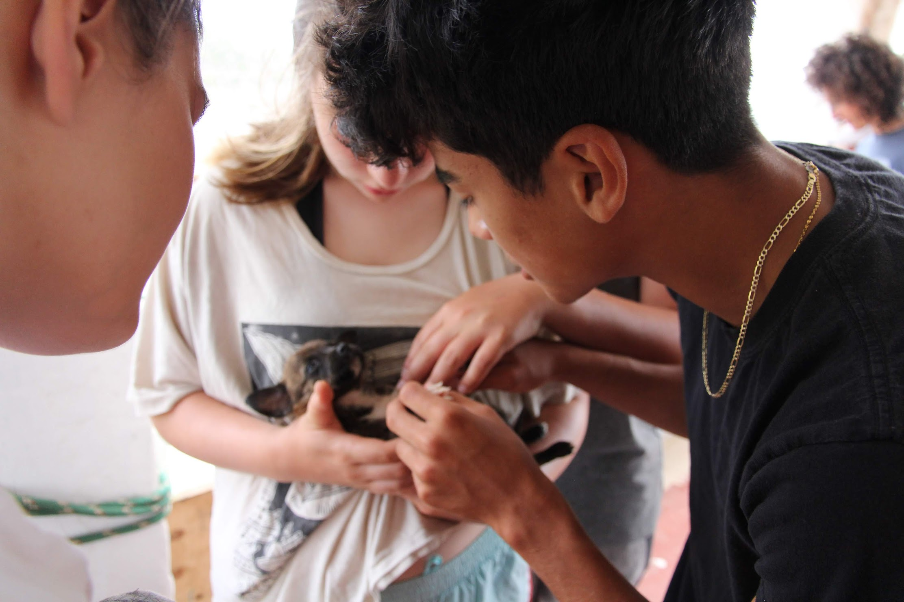

International Business × Data × Public Service
I’m an International Business student at CU Denver with a minor in Psychology, focused on the intersection of global strategy, data analysis, and public service. I’ve done GIS mapping for economic development, managed lifeguard teams in high pressure settings, and contributed to service projects in the Dominican Republic and British Virgin Islands. Bilingual in English and Spanish.
Interested in roles combining international business, cybersecurity, intelligence, and public service.
ArcGISExcelHTML/CSSLeadershipSpanish/English
Featured
“Know The Feeling” — ESPN Campaign
AI in Business and Ethics Website
Japan’s Lost Decades — ECON
Service and Community Impact
British Virgin Islands: sunshade repair and animal rescue (puppy deticking and care).
Dominican Republic: building and running a daycare / primary education center (classroom support and activities).

